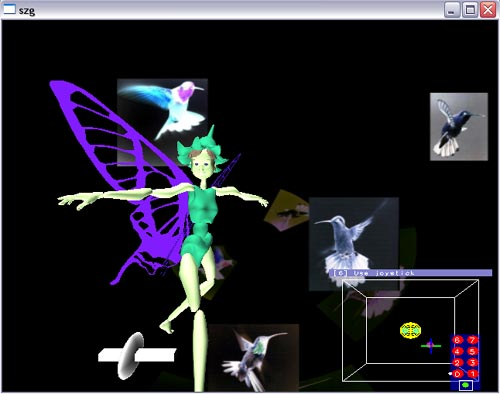
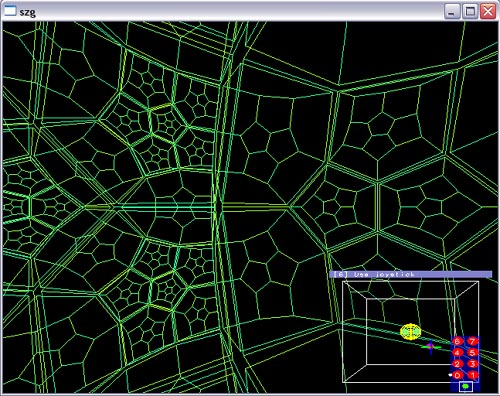

Syzygy: Running Programs in Standalone Mode
PLEASE NOTE: On Mac OS X, you MUST be running X11 for Syzygy graphical programs to work.

In this chapter, you'll learn about Syzygy configuration and running Syzygy programs without a cluster ("standalone" mode). You should pay particular attention to how environment variables and a configuration file (by default called szg_parameters.txt) provide configuration information.
Sometimes convenience dictates that Syzygy should scale down its operations. Cluster software operation has more overhead, from an administrative and user perspective, than running a self-contained program. Consequently, if the user wants run Syzygy programs on a single device, possibly for testing purposes or because a single computer is all that is available, Syzygy programs support standalone mode: running as self-contained executables on a single device.
This chapter describes standalone mode. It is an introduction to running Syzygy programs, allowing you to get started right away, before setting up your Syzygy cluster using Phleet. Information about Syzygy configuration is included, but the more advanced user should consult the chapter devoted to configuration examples for further information. We also only outline using two of the sample programs, just to keep things simple, allowing the interested user to consult the chapter on example code to find out how to set things up further.
We outline how a Syzygy program starts up and makes the decision about whether or not it is operating in standalone mode or connected to a Phleet (Syzygy cluster).
You can force programs to run in standalone mode by running the "dlogout" command. This marks your Syzygy login file as disconnected from any szgserver. When you are running in standalone mode, your program will print, in the midst of many other lines of start-up information, the following line:
my_program_name remark: RUNNING IN STANDALONE MODE. NO DISTRIBUTION.

Test standalone mode by running "hspace", a master/slave sample application, and "parade", a distributed scene graph sample application. These are both contained in the base Syzygy distribution and can be downloaded or compiled as described here. For more information on the different types of Syzygy applications, please consult the introduction to Syzygy programming.
When running "hspace" in standalone mode, something looking like a green spiderweb should fill the window. There will also be a small overlay window in the lower right corner showing the tracker simulator interface, whose operation is described in this chapter. When running "parade", you will see a collection of collection of virtual humans marching across the screen, again with the tracker simulator in the lower left corner. More information about these and other sample applications is included in the examples chapter.
When a Syzygy program starts, it needs to be configured with information regarding where it should find data files, where it should place its graphics screen on the desktop, and where sound and texture files exist, among other things. The parameter values in the database are of two sorts: local parameters, which pertain to the configuration of particular computers, and global parameters, which store information pertaining to the system as a whole. Global parameters are often (somewhat) complex pieces of XML, such as is used for configuring the DeviceServer (which generates input events) or for configuring a graphics display.
When a Syzygy program runs in standalone mode (but not in Phleet mode), it tries to load a local parameter database (which can, confusingly, contain both local and global parameters) from a file. By default, the program tries to load the file szg_parameters.txt in its current working directory. However, the file name can be overriden by a special command line arg (assuming the program has been correctly written to give the undelying framework first shot at manipulating the command-line):
my_program_name arg1 arg2 -szg parameter_file=szg_anaglyph.txt my_program_name arg1 arg2 -szg parameter_file-szg_virtualcave.txt
Syzygy library code will strip its "special" args, which in the above lines are the -szg and what follows, from argc/argv before giving those to the program itself.
If the program cannot open the specified config file and the environment variable SZG_PARAM is set, it will use SZG_PARAM's value as a file name and try to load that file.
Local parameters are stored (in a config file such as szg_parameters.txt) like this:
computer_name parameter_group parameter_name parameter_value
Global parameters are stored (in a config file) like this:
<param> <name> parameter_name </name> <value> parameter_value </value> </param>
When the program wants to find out a configuration parameter value, it follows this procedure:
We now show a sample standalone config file. Note that the first "NULL" replaces the computer name in a standard Syzygy parameter file assignment line and is interpreted as a wildcard indicating the computer on which the program runs. Qualifying parameters with a computer name does not make much sense in standalone mode: it is really just for Phleet mode.
In the standalone config file, local parameters go inside an assign tag.
<szg_config>
<param>
<name>head_mounted</name>
<value>
<szg_display>
<szg_window>
<size width="600" height="600" />
<position x="50" y="50" />
<szg_viewport_list viewmode="normal">
<szg_camera>
<szg_screen>
<center x="0" y="0" z="-5" />
<up x="0" y="1" z="0" />
<dim width="10" height="10" />
<normal x="0" y="0" z="-1" />
<headmounted value="true" />
</szg_screen>
</szg_camera>
</szg_viewport_list>
</szg_window>
</szg_display>
</value>
</param>
<param>
<name>fixed_wall_passive</name>
<value>
<szg_display>
<szg_window>
<size width="600" height="600" />
<position x="50" y="50" />
<szg_viewport_list viewmode="walleyed">
<szg_camera>
<szg_screen>
<center x="0" y="5" z="-5" />
<up x="0" y="1" z="0" />
<dim width="10" height="10" />
<normal x="0" y="0" z="-1" />
<headmounted value="false" />
</szg_screen>
</szg_camera>
</szg_viewport_list>
</szg_window>
</szg_display>
</value>
</param>
<assign>
NULL SZG_DATA path /home/public/Data
NULL SZG_RENDER texture_path /home/public/Texture
NULL SZG_RENDER text_path /home/public/Texture/Text
NULL SZG_SOUND path /home/public/Sounds
NULL SZG_DISPLAY0 name head_mounted
NULL SZG_DISPLAY1 name fixed_wall_passive
</assign>
</szg_config>
The local parameters in the config file given above (look inside the assign tag) control where Syzygy programs look for data, textures, and sounds, as explained here. They also specify the default screen name, which, in this case is the global parameter "head_mounted". You save the config file (as szg_parameters.txt) and experiment with modifying "head_mounted" to see how the window changes.
If you are in the directory with your szg_parameters.txt file, try running:
parade
You can quit by pressing ESC. Now, try:
parade -szg mode/graphics=SZG_DISPLAY1
The option overrides the default display value. This gives a window suitable for a passive stereo display, where, if the window were fullscreen, each window half could be displayed by a different projector.